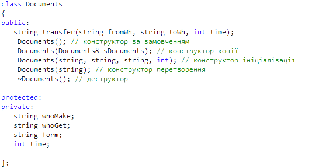

Технологія розробки даної версії
Реалізація композиції та агрегації між класами за допомогою конструкторів
Реалізацію зв'язків розглянемо на прикладі наступного ланцюжку зв'язаних класів: VNZ - MTDB - TMC - Documents. Інтерфейси цих класів мають наступний вигляд:
Для класів, які зв'язані агрегацією чи композицією, спочатку мають бути створені складові частини класів, а потім агрегат чи композит. До того ж, вони не можуть існувати без своїх складових частин. Тобто, конструктори для атрибутів класу (складових частин) мають викликатися всередині конструкторів агрегату чи композиту.
Для того, щоб був створений ВНЗ (клас VNZ) треба, щоб існувала його складова частина - матеріально-товарна база (клас MTDB). Аналогічно для створення матеріально-товарної бази має існувати товарно-матеріальна цінність (клас TMC), для створення якого в свою чергу має бути створений документ (клас Documents).
Тобто при створенні екземпляру класу VNZ в його конструкторі має викликатись конструктор для його атрибуту - екземпляру класу MTDB.
//Конструктор ініціалізації
VNZ::VNZ(string n, string a, string b)
: name(n),
address(a),
bookkeper(b),
clock(0),
base()
{
cout<<"'VNZ' was created (initialisation)."<< endl;
}
В цьому конструкторі ініціалізації для класу VNZ base() є запуском конструктора класу MTDB (його екземпляром є атрибут класу VNZ base - матеріально-товарна база університету).
//Конструктор за замовчуванням
MTDB::MTDB()
: listProd()
{
cout<<"'MTDB' was created (default)."<< endl;
}
В цьому конструкторі за замовчуванням для класу MTDB listProd() є запуском конструктора класу TMC (його екземпляром є атрибут класу MTDB вектор listProd - список товарно-матеріальниха цінностей в базі університету).
//Конструктор за замовчуванням
TMC::TMC()
: name(""),
type(""),
price(-1),
shelfLife(-1),
supplierPtr(0),
listDoc()
{
cout<<"'TMC' was created (default)."<< endl;
}
В цьому конструкторі за замовчуванням для класу TMC listDoc() є запуском конструктора класу Documents (його екземпляром є атрибут класу TMC вектор listDoc - список документів, що супроводжують дану товарно-матеріальну цінність).
//Конструктор за замовчуванням
Documents::Documents() :
whoMake(""),
whoGet(""),
form(""),
time(-1)
{
cout<<"'Documents' was created (default)."<< endl;}
}
[повернутися]